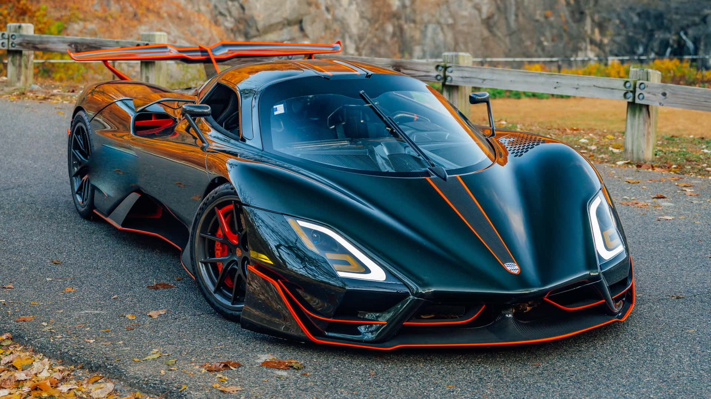

The SSC Tuatara is a groundbreaking hypercar designed and manufactured by SSC North America, known for its record-breaking speed and cutting-edge technology. Launched as the successor to the Ultimate Aero, the Tuatara features a sleek, aerodynamic design inspired by aerospace engineering, boasting a remarkable drag coefficient of just 0.279. Under the hood, it is powered by a 5.9-liter twin-turbocharged V8 engine that produces an astonishing 1,750 horsepower when fueled with E85, enabling it to reach speeds exceeding 300 mph. The car's lightweight carbon-fiber construction not only enhances performance but also ensures safety and durability. Inside, the Tuatara offers a luxurious cockpit with advanced technology, including a touchscreen interface and a configurable instrument panel. With its combination of extreme performance, innovative design, and engineering excellence, the SSC Tuatara stands as a testament to the pinnacle of modern automotive achievement, captivating enthusiasts and setting new benchmarks in the hypercar segment .